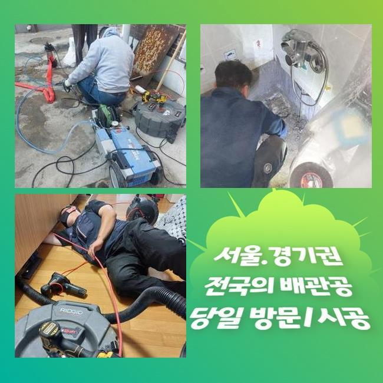
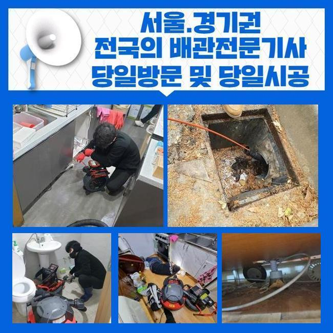
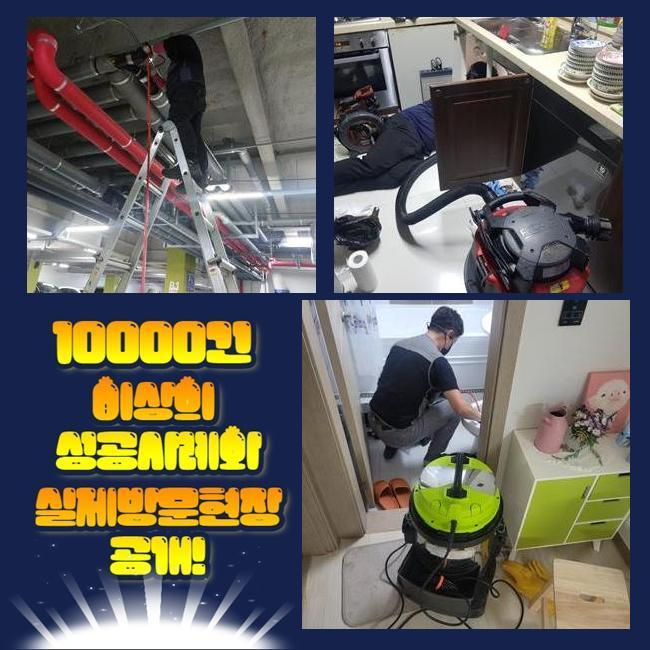
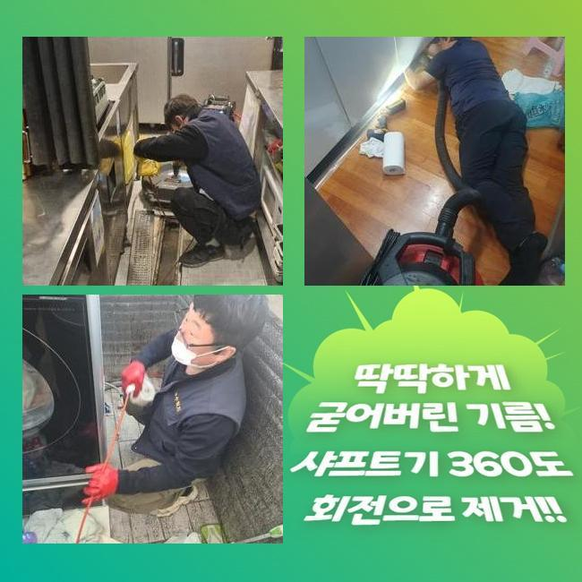
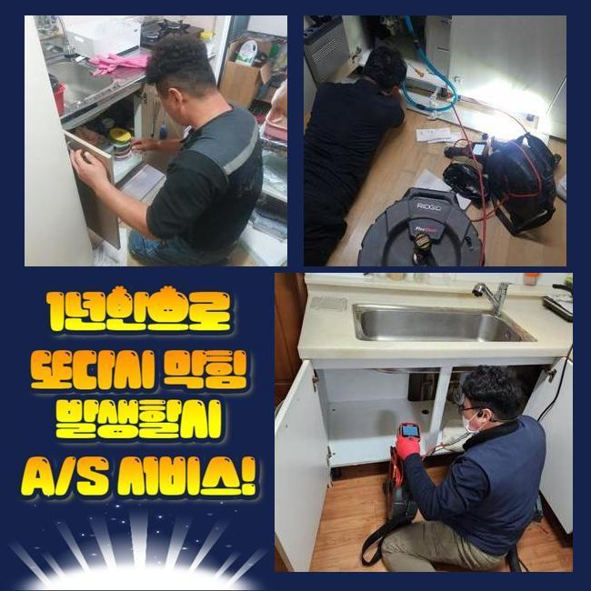
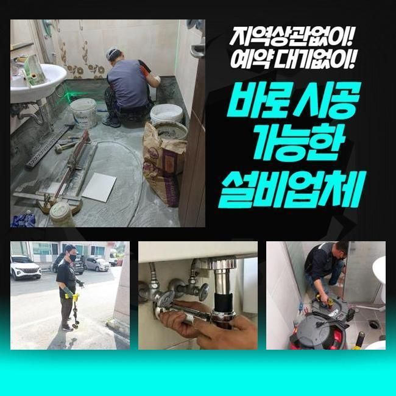
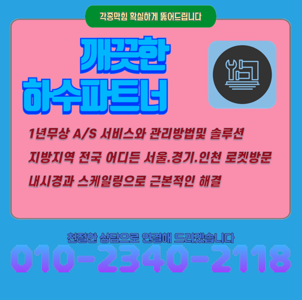

🏠 양평 강상면화장실하수구뚫음 용문면 맨홀역류 해결방법
용인 하수구막힘 전문 시공 후기

📋 작업 개요
- 위치: 용인
- 서비스 유형: 하수구막힘, 배관막힘, 맨홀막힘, 역류해결, 뚫는업체, 배관청소, 고압세척
- 작업 일시: 2025. 5. 11. 10:36
- 업체명: 하수구수사대 (010-5615-2118)
🔍 문제 상황
양평 강상면화장실하수구뚫음 용문면 맨홀역류 해결방법
멀지 않은 위치의 현장에서 하수구의 불능으로 당장 영업이 안 된다며 하시며 빠른 방문이 필요하다는 의뢰건을 받았습니다
식품을 판매하는 곳에서는 하수구 출입구가 폐쇄되는 사건 때문에 당장 물을 운용하지 못하므로 당장 요리부터 못하니 장사를 할 수가 없겠죠
하수구를 빠르게 뚫어줘야 고객님이 입을 악영향도 감소시킬 수 있으니 가까운 시일 내에 찾아뵙고 작업을 시행하기로 결정했습니다
맡겨주신 의뢰인분은 주방 쪽의 배수가 중단돼서 물 배출이 느릿해지고 바깥에 있는 커다란 하수시설의 잔수 역류가 생긴 상태라고 말씀하셨어요
실내 가까이에 있는 바닥 배수구를 우선은 체크하고 옥외 배관로까지도 관통시켜드려야 하기에 다소 까다로운 작업이 불가피했습니다
초기에 현장에 도착하면 전반적인 막힘 현황을 조사해본 뒤에 이번 업무의 소요시간을 분석한 다음 안내합니다
관로의 생김새가 독특하거나 막힌 구간이 다수라면 말끔하게 고치려면 약간 지연될 수 있습니다
실내에 이어 바깥 하수구를 열어보려고 했는데 맨홀 덮개가 녹물이 줄줄 나왔고 근처의 마감재까지 수분기가 가득 들어가서 정돈되지 않은 상태였습니다
부식된 곳에 파손이 일어나지 않게끔 적절한 세기로 조절해서 처리하려고 다짐하고 자세하게 들여다보았습니다

🔎 원인 분석
💡 전문가 진단: 정밀 진단 장비를 사용하여 슬러지의 고착 여부를 판명하고 타격/세척 작업을 실시했습니다.
뚜껑을 들어내자마자 보이는 건 오염원인들이 바로 드러났습니다
뭉쳐있는 기름찌꺼기들이 덕지덕지 붙고 떠다니는 걸 바로 확인할 수 있는 수준이었기 때문에 보이는 부분의 세척부터 들어가서 안을 닦아내야 했습니다
가장 먼저 주방배관부터 말끔하게 닦아내고 배관용 카메라 장비를 넣어서 내측을 관찰해봐요
내외부의 하수관들이 어떤 식으로 결합되어 있는지 밑그림을 그린 후에는 고압세척기의 파워로 관로 사이사이에 끼어있는 유분기 어린 슬러지를 세척하기로 단계를 구상했습니다
이 수준에서는 아무리 카메라를 켜봐도 내부를 식별하는게 곤란할 것 같아서서서 잔여하수를 빨아내는 석션기 업무에 먼저 임했습니다
석션장치는 일반 청소기처럼 진공 방식으로 동작하는데 찰랑거리는 하수와 찌꺼기를 남김 없이 바깥으로 투출되도록 하는 성능을 지니고 있습니다
흡수하는 힘이 남다르므로 견고하지 않은 액체나 고체는 쉽게 기다란 석션 안으로 집합하게 됩니다
접착성 물질이거나 따개비처럼 착 달라붙어있는 찌꺼기는 제거가 까다로워서 석션기의 가동만으로는 배관을 시원하게 뚫어내는 확률이 떨어집니다
막혀있는 양상과는 무관하게 첫 주자는 늘상 이 석션기를 꼭 가동하고 있을 정도로 식당 배관 정상화 작업을 잘 끝내려 한다면 항상 최소 한번은 작업 중에 쓴답니다
석션기로 내부를 빨아당겨주는 작업을 하고서 카메라를 안으로 넣어봤어요
이 카메라의 기능으로는 얽혀있는 형상으로 길고 너비가 넓은 관로라도 이곳저곳 확인하며 막힌 구간과 하수관의 컨디션에 대해서 객관적으로 볼 수 있습니다

🔧 작업 과정
이렇게 관찰을 거쳐봤더니 기름기가 잔뜩 고인 기름때가 상당량 자리하고 있었어요
집합체가 되어 견고해진 방해물이 오늘 다룰 하수구 막힘의 확실한 이유일 것이라는 추론이 되었습니다
알게모르게 배수관 내측으로 서서히 방출된 기름이 통로 지름에 맞게 자라났고 그 탓에 바깥쪽까지 유동성을 잃어버리고 턱 막혀버려서 범람 사태까지 벌어진 것이었네요
샤프트 스케일링으로 정리를 해주면서 실내 관로와 연결된 옥외 하수구 역시 청결관리를 해드릴 필요성이 있었어요
플렉스 샤프트는 유연한 몸체를 지녔고 그 끝에는 견고한 갈고리가 자리하고 있습니다
앞선 석션으로도 여전히 남은 거대한 오물이라거나 관로에 오래 눌어붙어있는 오물을 살살 긁어서 빼거나 소규모로 파편화할 수 있습니다
이러한 두 청소 장비와 관찰 내시경까지 두루 활용해야 하자없는 확실한 정상화를 볼 수 있으며 올스탑이 되어버린 배관 성능을 원상복구할 수 있습니다
세부적인 조사에 착수해보았더니 오염도가 중증이라서 고압수를 쏘는 활동도 들어가야 한다고 판단했습니다
흡입하고 긁어주는 작업으로 파이프의 움직임이 꽤나 트였기에 다음으로는 고압수 세척기를 진출시켜서 다른 기법으로 청소했어요
강한 압력의 물을 정확한 포인트로 이동시켜주는 호스를 활용해서 이물질의 밀집도가 높은 곳들을 순차적으로 삭제했습니다
꼼꼼하게 고압수를 쏘고나니 결국 상당한 규모로 성장했었던 슬러지 물질을 타개했습니다
시공 전에 카메라 기기로 관로의 형상과 심각도를 관심있게 조사해보고 집중력있는 청소 작업을 이행하여 내부에 있던 이물질을 삭제시켜야하는 이번 현장에서도 탁월한 결과물을 창출했습니다
모든 과정들을 거친 이후에 안쪽의 변화를 확인하니 통로도 훤하게 트이고 찌꺼기 덩어리 하나도 통로 어디에서도 감지되지 않았고 벽면에 있던 기름때들도 떨어져나가서 배관이 더 깔끔해진 것을 인식할 수 있게 됐네요
불투명한 색으로 관로 안에서 찰랑대던 물도 완전히 삭제됐고 장비에 묻어나왔던 이상물질들도 제거됐어요
아무래도 식당 건물이라면는 식용유를 사용하는 양도 최소한 곱절은 많으므로 사용 중에 하수구가 막히는 사태가 더 자주 일어납니다
잘게 썰린 음식물이나 꾸덕한 기름기가 물과 혼입되지 않도록 평상시에 업무하실 때 오염을 방지해야 합니다
육안상으로 개선을 체크했더라도 물의 폐기 과정을 확인하면서 시공이 결함없이 처리되었는지 더블체크를 해보게 됩니다


✅ 작업 완료
수도꼭지에서 물을 쏟아준 다음에 고압세척 작업을 한 외부하수구까지 물 이동이 끊기지 않고 물이 잘 방출되는지 매의 눈으로 살펴보는 겁니다
쏟아부었던 물기가 옥외 관로로 속속들이 모여드는 게 눈에 띄었는데요
하수구 기능을 되돌려드리고 몇번 더블체크를 하고 자리를 뜨게 됐습니다
하수가 제대로 나가지 못하면 별 일 아닐거라는 생각에 스스로 뚫어보려다가 파이프 훼손이 일어날 수도 있습니다
막힘 발발 시 바로 전화주신다면 내방드리고 물막힘이 발생한 뿌리까지 뽑아드릴테니 믿고 맡겨주신다면 좋겠습니다




⚠️ 하수구 배관 막힘 예방 및 관리 가이드
- ✅ 머리카락, 비닐, 물티슈 등 물에 분해되지 않는 이물질은 하수구 유입을 절대 금지해 주세요.
- ✅ 하수구 거름망을 씌우고 모여진 이물질은 주기적으로 쓰레기통에 바로 비워주셔야 합니다.
- ✅ 배관 노후가 심할 경우 이물질이 더 쉽게 걸리므로 주기적인 배관 세척(고압세척 등)을 권장합니다.
- ✅ 작업 후 1년 이내 재발 시 하수구수사대에서 무상 A/S 보증 서비스를 제공합니다.
💡 핵심 정리
- 확실한 장비 작업(내시경 점검 및 샤프트 스케일링)으로 원인을 뿌리 뽑습니다.
- 작업 후 1년 이내에 동일한 부위 재발 시 100% 무상 A/S 서비스를 보장합니다.
- 서울 · 경기 · 인천 전 지역에 24시간 언제든 긴급 출동할 수 있도록 항시 대기 중입니다.
❓ 자주 묻는 질문 (FAQ)
🚨 용인 하수구막힘 문제로 고민이신가요?
정확한 원인 진단과 확실한 시공으로 재발 없는 해결을 약속드립니다.
24시간 긴급 출동 | 서울 · 경기 · 인천 전지역 | 1년 내 재발 시 무상 A/S